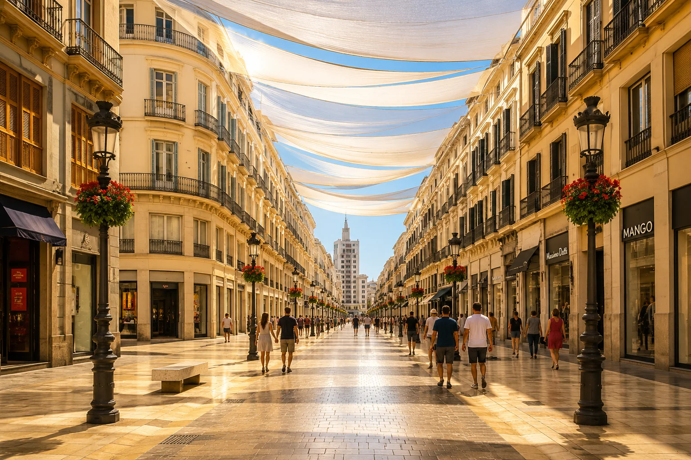
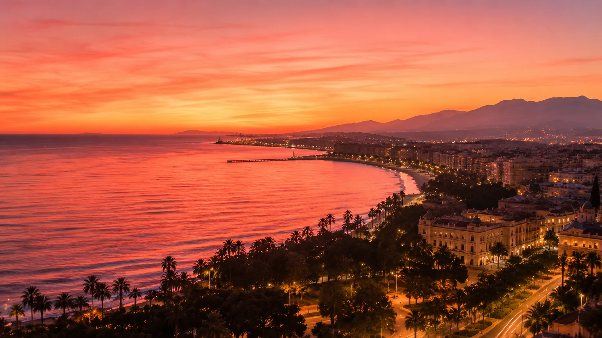
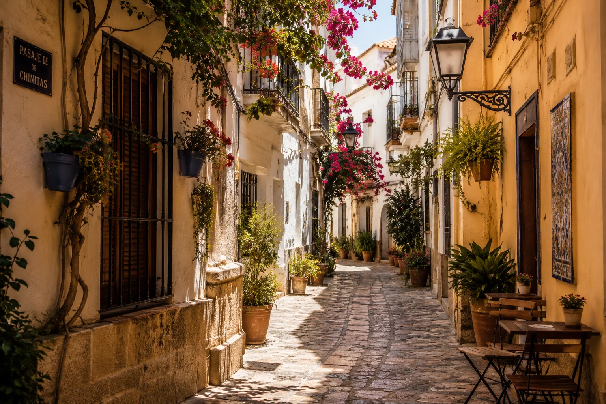
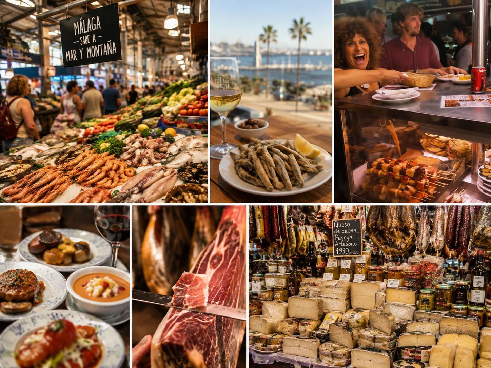
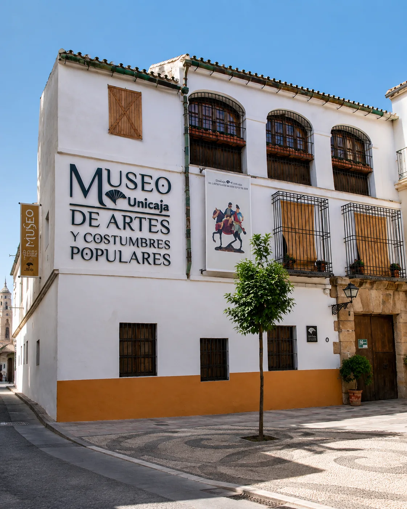
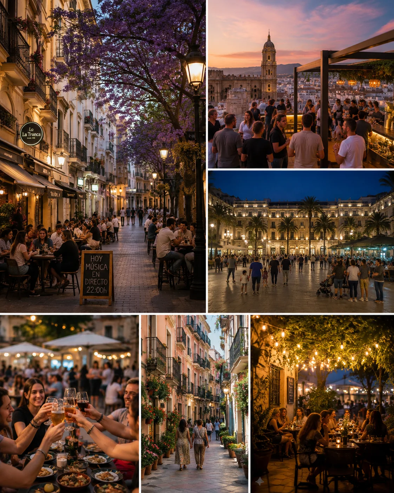

Historia y patrimonioDesde 28 €
Málaga Esencial
Un primer encuentro con la ciudad entre la Catedral, la Alcazaba y las calles que explican cómo Málaga llegó a ser lo que es hoy.
Consultar esta experiencia
Paseos privados y grupos pequeños · Málaga
Recorre historias, sabores y rincones que no siempre aparecen en las postales, de la mano de alguien que ha crecido en Málaga y la siente como su casa.
Elige tu paseo
Cada recorrido tiene su propio ritmo, pero todos comparten lo esencial: grupos pequeños, conversación cercana y una mirada local.

Un primer encuentro con la ciudad entre la Catedral, la Alcazaba y las calles que explican cómo Málaga llegó a ser lo que es hoy.
Consultar esta experiencia
Leyendas, detalles escondidos y calles que suelen quedar fuera de la ruta. Un paseo para quien disfruta mirando un poco más de cerca.
Consultar esta experienciaLa Alcazaba, el puerto y la ciudad bajo la luz más bonita del día. Una experiencia relajada para saborear Málaga sin mirar el reloj.
Consultar esta experienciaUna ciudad, muchas capas
Piedra, siglos, memoria
Detrás de cada esquina
Sal, luz, vida cotidiana
Tu anfitriona local en Málaga
La persona detrás del paseo
He crecido en Málaga y esta ciudad forma parte de mi historia.
Conozco sus calles, sus ritmos y esos rincones que se disfrutan de otra manera cuando alguien te cuenta lo que hay detrás. Me gusta compartir Málaga con cercanía, mezclando su historia con la vida cotidiana y dejando espacio para conversar, preguntar y sorprenderse.
Puedo acompañarte en español, inglés o francés. Prefiero los grupos pequeños y los paseos con un ritmo natural, para que la experiencia se sienta cercana y descubras la ciudad de una forma personal, espontánea y sin prisas.
Seis instantes, una ciudad
En una fachada que guarda siglos, en la luz del puerto y también alrededor de una mesa. Hay una Málaga para cada sentido.



Después del paseo
“Sentimos que paseábamos con una amiga que conocía cada esquina. La historia fue cercana, divertida y nunca pareció una clase.”
“El equilibrio perfecto entre los lugares imprescindibles y los detalles que jamás habríamos descubierto solos.”
“Íbamos con niños y Claudia ajustó el ritmo con mucha naturalidad. Todos terminamos mirando Málaga con otros ojos.”
Así de sencillo
Una conversación breve es suficiente para preparar una experiencia que encaje contigo.
Explora los paseos o cuéntame qué te interesa de Málaga.
Confirmamos idioma, fecha, grupo y cualquier necesidad especial.
Recibirás un punto de encuentro claro. Del resto me encargo yo.
Antes de caminar
Aquí tienes algunas respuestas rápidas. Si tu pregunta no aparece, escríbeme y lo vemos juntas.
Hacer otra preguntaLas experiencias pueden realizarse en español, inglés o francés. Cada grupo utiliza un solo idioma, acordado al reservar.
Entre dos y dos horas y media, según la experiencia. La duración exacta se confirma antes de reservar.
En un lugar céntrico y fácil de localizar. Recibirás la ubicación y las indicaciones exactas al confirmar.
Hay opciones privadas y para grupos pequeños. La disponibilidad y el máximo de participantes están pendientes de definir.
Sí, se recomienda reservar con antelación, especialmente en fines de semana y temporada alta.
Una lluvia ligera normalmente no detiene el paseo. Si el tiempo impide realizarlo con seguridad, acordaremos una alternativa.
Sí. El recorrido puede adaptar su ritmo y algunas historias cuando participan familias con niños.
Algunas calles tienen pavimento irregular o pendientes. Cuéntame tus necesidades antes de reservar para proponer la ruta más adecuada.
Los métodos de pago y las condiciones de cancelación todavía deben ser definidos por la guía.
Sí, puedes consultar una experiencia privada o una propuesta adaptada a tus intereses, horario y grupo.
Tu próxima historia puede empezar aquí
Cuéntame cuándo vienes, cuántas personas sois y qué te gustaría descubrir. Te responderé con una propuesta sencilla y sin compromiso.
También puedes escribir a Claudia por email o redes sociales.